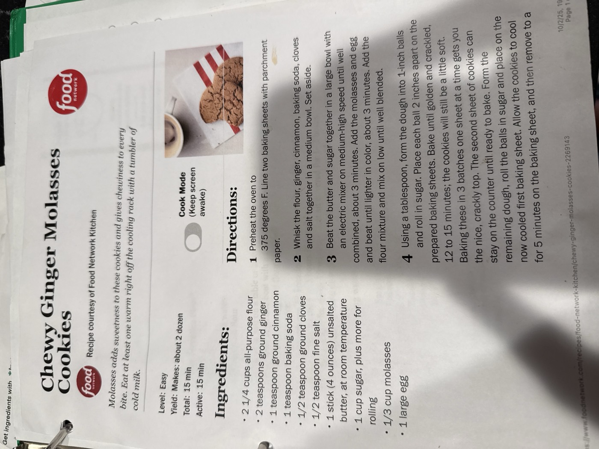

Chewy Ginger Molasses Cookies

Molasses adds sweetness to these cookies and gives chewiness to every bite. Eat at least one warm right off the cooling rack with a tumbler of cold milk.
~2 dozenyield
15 minactive time
Vegetariandiet
Ingredients
- 2¼ cups all-purpose flour
- 2 tsp ground ginger
- 1 tsp ground cinnamon
- 1 tsp baking soda
- ½ tsp ground cloves
- ½ tsp fine salt
- 1 stick (4 oz) unsalted butter, at room temperature
- 1 cup sugar, plus more for rolling
- ⅓ cup molasses
- 1 large egg
Method
- Preheat. Preheat the oven to 375°F. Line two baking sheets with parchment paper.
- Mix the dry ingredients. Whisk the flour, ginger, cinnamon, baking soda, cloves, and salt together in a medium bowl. Set aside.
- Cream and combine. Beat the butter and sugar together in a large bowl with an electric mixer on medium-high speed until well combined, about 3 minutes. Add the molasses and egg and beat until lighter in color, about 3 minutes more. Add the flour mixture and mix on low until well blended.
- Shape and bake. Using a tablespoon, form the dough into 1-inch balls and roll in sugar. Place each ball 2 inches apart on the prepared baking sheets. Bake until golden and crackled, 12–15 minutes; the cookies will still be a little soft.
- Cool. Allow the cookies to cool on the baking sheet for a few minutes, then remove to a cooling rack.
For the crackly top: bake one sheet at a time in 3 batches rather than two sheets at once — the card notes this gets you the nice, crackly crust. The next sheet of dough balls can sit on the counter until ready to bake, and reuse the first (now cooled) baking sheet for the last batch.